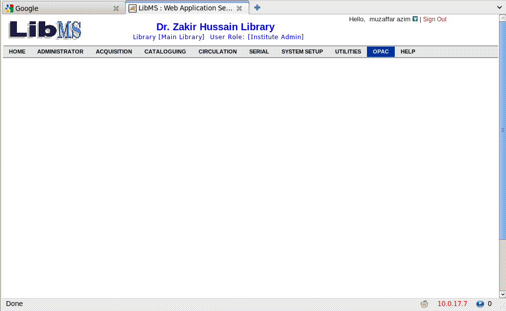
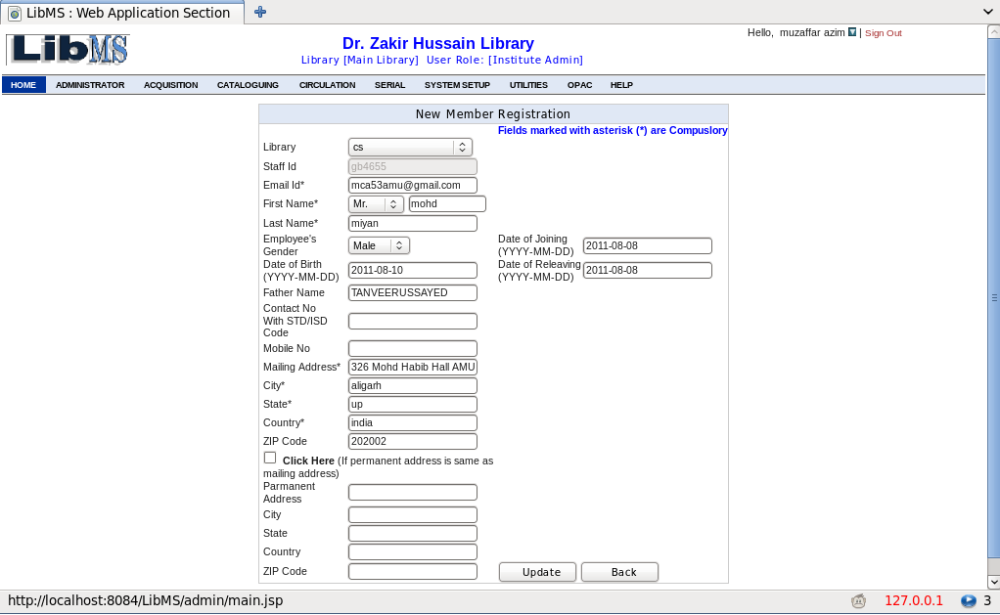
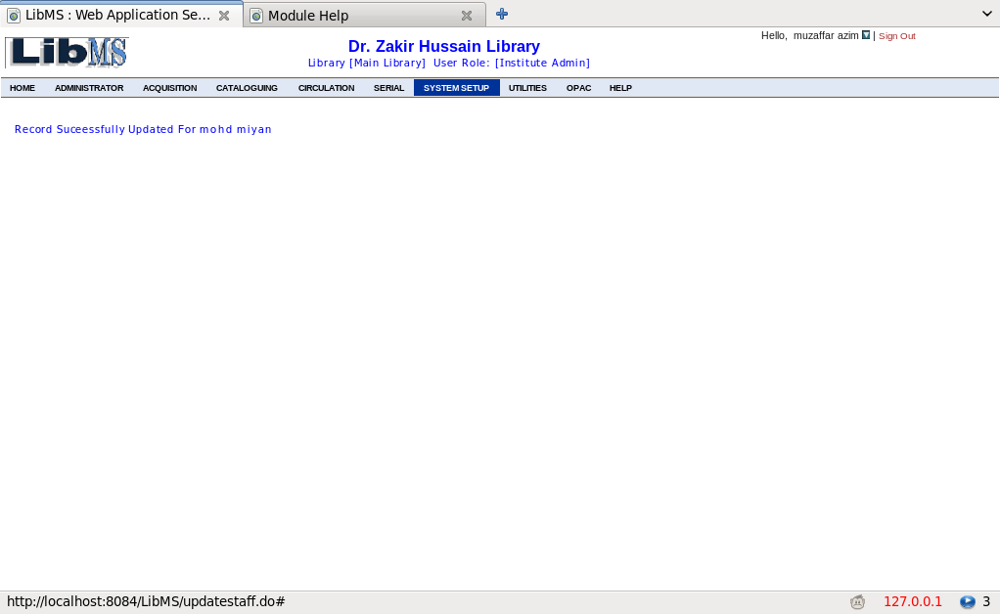
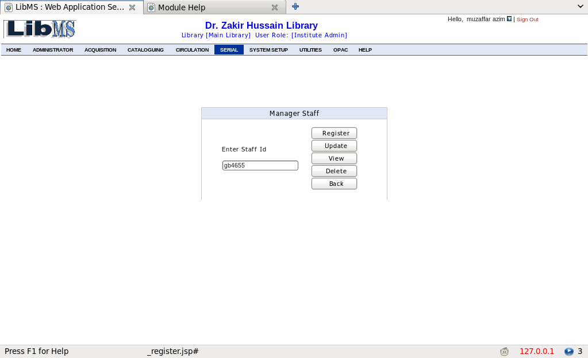
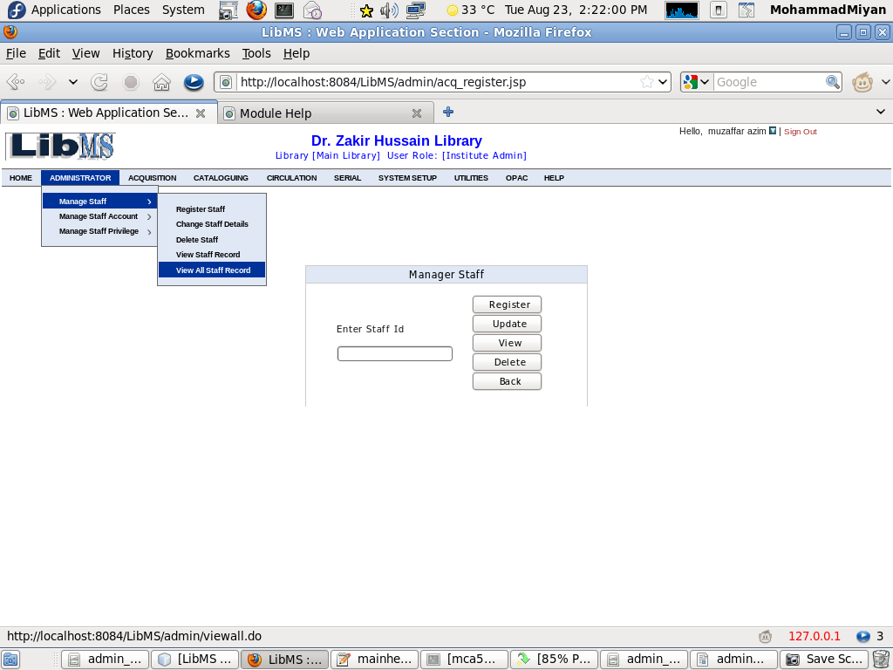
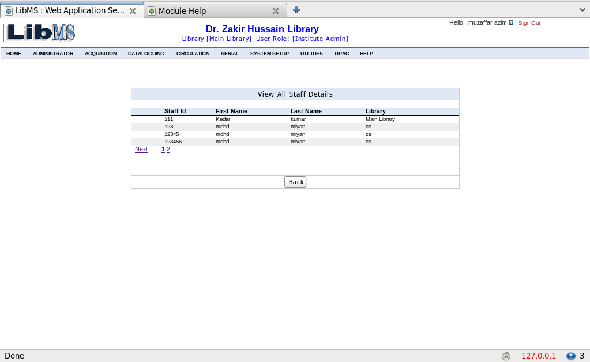
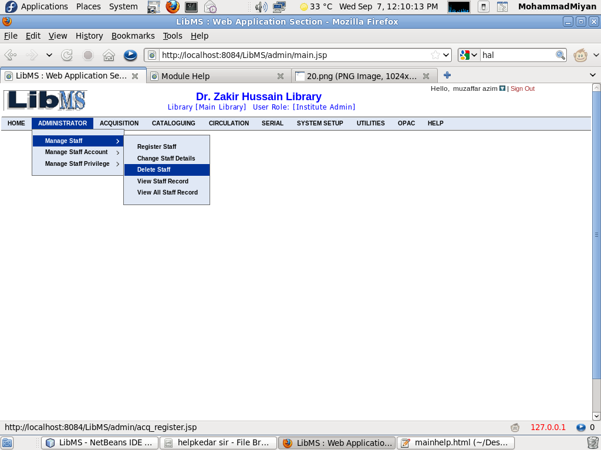
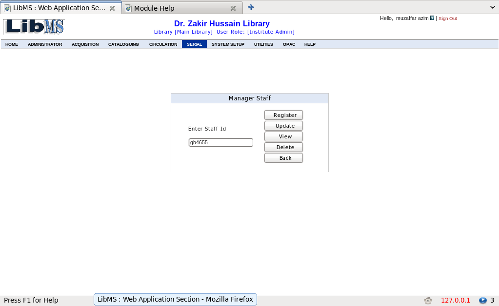
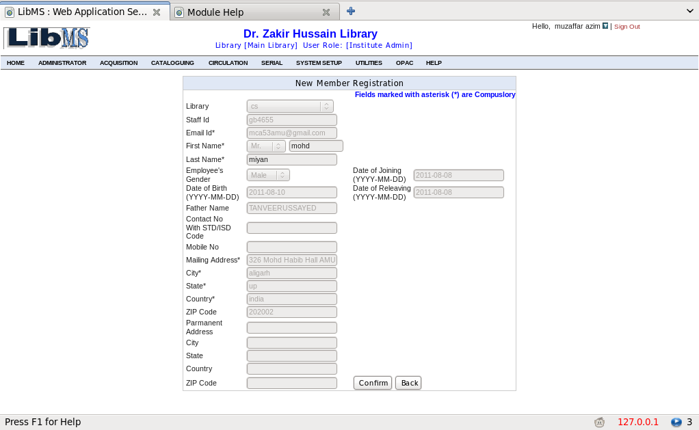
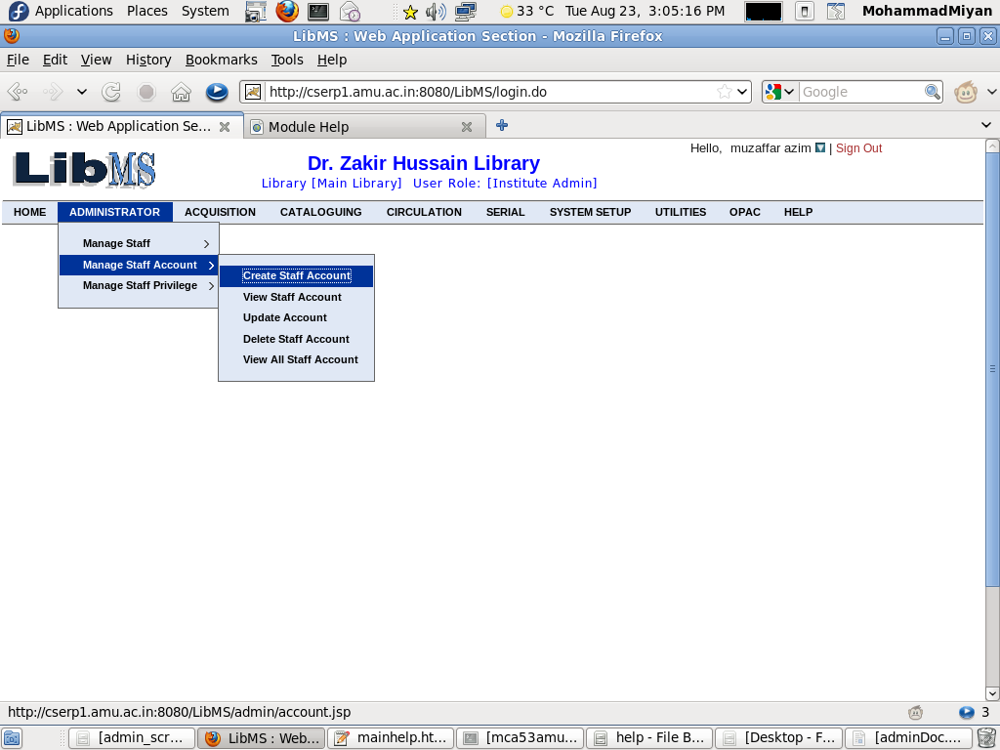

From this Module We can Manage Staff Registration, Account details and Privileges of Staff's. Administrator may enter necessary details of the Library Staff using Register Staff option, may create login account for the registered staff and then assign privileges to the staff whose login account has been created.
Menu Option

In Staff Registration we can add Library Staff in LibMS, by Which They can login in LibMS and can perform different activities based on privileges assigned to them
for that,Click on Staff Registration->Register Staff as mention in given screenshot
When staff detail is registered successfully you(Institute Admin) can create account for the registered member. You can also skip this step, but if you skip here you have to create account later from Manage staff Account menu.(path: Administrator->Manage Staff Account->Create Account)

When you click Create Account an email regarding username and password is sent to the staff member. Now he can access your Library with his username and password.
when you click submit the staff member screen will appear with the assigned privilege menu in bold letters. member can access only those menu which are dark(bold letters).
On Click on Confirm Privileges the privileges are succesfully set to the staff and mail is send to him regrading it.
You Can Also See privileges assigned to this member(Administrator->Manage Staff Privilege->View Privileges) By entering staff Id of the member. The Highlighted Menu will be accessible to the user. see the picture below.


Institute admin can update and change member detail by using staff Id.
if you want to change detail of the staff member click change staff detail.Enter Staff id of the member and click update button.
make changes in the field valuess and click Update
Record Successfully Updated message will appear(See in the picture below ).

Click Staff Registration->Register Staff->View Staff Record
Enter Staff Id of the member(eg. gb4655 etc)
Click View All Staff Record to view all registered members
All the records of the members are shown in the grid. click any record to find the detail of the record

Click Staff Registration->Register Staff->Delete Staff
Enter Staff Id of the member to delete the record.
Enter Staff id of the Member.
Click Confirm Button to delete.You Can Also go back if you dont want to delete.
if the record has been deleted from the database delete successful message will appear. see following picture.
From this Module We can create account for member who have priviously been registred in (Administrator->Manage Staff->Create Account) menu.Other operations are Update Delete View and View All.
Enter Staff id of the member who you want to create account for and click create account button.See picture below
Assign apropriate login id of the user and select role. See picture below.
if every thing goes right, a successfull pop up message will appear on the screen.
You Can Also See privileges assigned to this member(Administrator->Manage Staff Privilege->View Privileges) By entering staff Id of the member.
Click View Staff Account Link.you can create account only for those members who are previously been registered with register Staff(Manage Staff->Register Staff)
Enter Staff Id of the member and click view button.
Click Update Account.You can update account for those members who are registered and whose account has been created.You can't update account of the member whose account has not been created.
Enter Staff Id of the member who you want to updae account for and click update account button.
You can change Sub librry Name and his role in the library.
Click Delete Account.You can delete account for a member, though the member is registered in the library. in future you can again create for the deleted member, you dont need to re Register staff detail.
Click View All Staff Account.Here you can See details of all the registered member whose account has been created.See picture below
From this Module We can assign privilege to members who are registered as wll as their acount has been created .Other operatios are Change Privilege and View Privileges.
You Can Also See privileges assigned to this member(Administrator->Manage Staff Privilege->View Privileges) By entering staff Id of the member.
Click change pivilege.You can Change privilege of the member from here,by giving staff id of the member.You can alse see assigned privilege for the member by giving staff id.The assigned privileges will be highlighted.
Click the check boxes to assign the privileges.you can also preview the assigned privileges before you confirm them, the assigned privileges will be highlighted in the next screen

Click View Privilege. The assighned privileges will be highlighted, You need to give Staff id of the member.